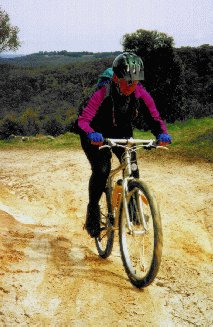
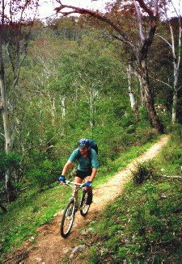

The Blue Mountains are located to the west of Sydney, Australia. It consists of a high plateau cut deeply by several valleys. The edges of the plateau are pretty steep, with cliffs at the top of the slope, and most of the paths that go between the valleys and the plateau make use of steps.
Simon and I wanted to spend a day mountain biking in the Blue Mountains, but as we were travelling around Austrailia for a month and would only be spending a day or two on bikes we brought along only the essentials: bike shorts, some tools, one water bottle (we'd carry extra water in rucksacks), and gloves.
|  |
| Myra on the dirt road |
We hired bikes from Mountain Designs on Katoomba's main street. The bikes were Giant Iguanas, rigid cromo bikes with STX/Alivio drivetrain, Dia-Compe V-brakes, and toe clips. We could have gotten Specialized Hardrocks with basic Rock Shox forks from another store (CycleTech), but they were about twice the price. We picked up our bikes soon after the store opened. Gareth, who organized the rental bikes for us, suggested the following route: go along the road to Blackheath, down Megalong Road, take the Six Foot Track to the suspension bridge crossing Cox's River, then turn around and take the Six Foot Track all the way back up the plateau (the last bit of which would involve 300 steps), then along roads back to Katoomba. He thought this would be a good day-long trip, and we agreed. As we left, Gareth asked if we were definitely going to do that route. We affirmed it. He said, "Good, so if you're back late, we'll tell the rescue services where to look for you".
We headed out. It was cool, and Simon wore his walking trousers over his bike shorts, and I had on tights and a jacket. First we went west along the Great Western Highway, the main road through this part of the Blue Mountains. It had one lane (occasionally two) in each direction and was smoothly surfaced and somewhat hilly. Although there was some traffic, the drivers were polite and passed us safely. At the town of Medlow Bath the highway turns right and passes over the railway line. We went straight here, along a dirt road that parallels the main road. This provided a pleasant car-free ride to Blackheath, and even a bit of technical challenge, as a section of a downhill had been badly eroded by water.
In Blackheath we turned left onto Shipley Road and then to Megalong Road, which follows a creek down off the plateau. We went down for what seemed like a very long time, enjoying the woosh of the wind. We stopped a couple of times to do some sightseeing. First was a little glade and waterfall (Mermaid's Cave, the sign said, but we didn't find any cave), then a bit of rainforest. Finally we were in the bottom of the valley. It was warming up, but it still wasn't quite warm enough for me to take off my jacket and tights.
There were some farms in the valley, several with horses. Evidently horseriding is a popular activity here. We found a little tea place and stopped there, sitting on the picnic table outside. We ordered a big pot of tea and ate our packed lunch (sandwiches and fruit buns) furtively as we waited for it to cool. We had gone through the water bottle by then, so we refilled it and headed off.
We came to the Six Foot Track soon after the road crossed Megalong Creek and the tarmac turned to dirt. We turned right, towards the suspension bridge. We finally felt warm enough to strip down to T-shirt and shorts.
At first the track was a wide dirt road, but then it crossed a couple of fields and became nice singletrack. There were plenty of rocks and roots, and lots of little ups and downs, though on the whole there was more down than up. I was immensely pleased: how I miss technical riding living around Cambridge! There were even some steps, which we, playing safe, dismounted for. We stopped often to take pictures, admire the view, and drink water.
Eventually, we reached the suspension bridge. It was very narrow, and a sign said that only one person was allowed on the bridge at a time. There was a party of walkers going over the bridge, and the last two were about to make their way across. They asked "How do you get the bikes across?" I answered, "We don't; we turn around and go back". And, after eating a couple of cereal bars and drinking more water, we did exactly that.
|  |
| Simon on the Six Foot Track |
We were starting to get worried about the time. It was now a bit after 3pm. The shop closed at 5:30, although Gareth said that there was usually someone around until 6. A harder deadline was that it would be dark by 6pm, and all we had for lights was one Mini Maglight torch. We kept it moving, rolling swiftly over the parts we could ride, and pushing or carrying the bikes over the stuff we couldn't. We made good time, and soon we came out of the trees and saw, far away, the cliff that we'd have to get the bikes up. We got back to Megalong Road by a bit after 4pm. We were hopeful that we might make it back in time. We were even more hopeful when we found that the Six Foot Track on the other side of Megalong Road was mostly flat and smooth: no technical bits or stairs to slow us down. It soon became a fire road, and we were going even faster, and the cliff got closer and closer.
And then, we went slower, as the road started going up and got narrower. Before too long it was too steep to ride, at least in our tired state. We pushed the bikes. Then the track got rougher, and we had to lift the bike over the occasoinal rocks, and then we had to carry them over clusters of rocks. It was past 5, and the light was beginning to fade. We knew we wouldn't make it back before the shop closed.
We were already pretty tired by the time we reached the first step. It was about a foot high, formed by dirt banked against a log that formed the edge of the step. We looked at it, knowing that there were many more like it to come. I got out the camera to take a picture, but it was too dark, and I hadn't brought a flash. I put it away and got out my jacket. No, not to wear, I knew I'd be working up a sweat carrying the bike. I wanted it for a shoulder pad. I bent down and hoisted the bike up. I started up, followed by Simon, who had similarly arranged his bike.
I soon found that slow and steady was by far the best way to go. If I went too fast I'd get out of breath, and then I'd have to stop. And of course, I'd put the bike down. And then when I got going I'd have to wrangle it back onto my shoulder. If I went slowly I could continue up without stopping. Simon found that he couldn't carry the bike on his shoulder; it kept slipping off. So he ended up picking the bike by the seat tube, carrying it up a bunch of steps, and then stopping to rest.
I think at this point we really appreciated the light hiking boots we were wearing. Normally we would be wearing cleated cycling shoes, but we left these (and the matching SPD pedals) at home for lack of space. The hiking boots gave us a better grip over the rocks and logs that we were walking up, so maybe it worked out for the best after all.
Even with the jacket padding my shoulder, the bike still pressed heavily onto it. I found that if I grabbed the bottom edge of the big chainring with my right hand (the gloves protecting my fingers from the teeth), my arm was completely extended, and so I could support the bike using little additional muscle power. I grabbed the down tube with my left hand to further take the weight off my shoulder. And so I went. Step, pause, step, pause, step, pause, all in slow motion.
We heard a helicopter. I got really nervous: are they looking for us? Maybe the guys at Mountain Designs, noting that we hadn't gotten back before closing time, had called out mountain rescue on us! After I'd fretted for a bit, the helicopter went away. But now were they looking for us down in the valley?
The tops of the trees got nearer and nearer as the last of the light faded from the sky. Both of us would have enjoyed stopping for a rest, but we wanted to make it to the top before it got completely dark. So we continued on. Step, pause, step, pause for me. Step step step step step step, stop and rest for Simon.
Finally we were at the top. It was dark. We stopped, ate the last of our cereal bars, and drank the last of our water. We went on, relying mostly on ambient light to guide the way as we went along a fire road towards the Great Western Highway. Luckily the track was a very light colored, sandy dirt. We pushed the bikes up a couple of the steepest and loosest bits, and then we were back at the road. Simon got out his Mini Maglite and pointed it ahead. We stayed on the shoulder and were very glad when we got to the streetlights on the edge of Katoomba. We vowed that the next time we go travelling and plan to rent bikes, we'll bring along some lights.
We weren't on the main road long. We turned off and went into town by less travelled roads. Or rather, we tried to go into town via less travelled roads. We should have stopped to look at our map, but I thought I remembered the way. So we rode on. And on. Finally, still finding ourselves on the outskirts of town, we stopped a passing van to ask directions to the center. "You're going the wrong way, mate!" we were told. Oh well. We reversed course and were soon back to the main street.
It was past seven now, and the shop had long closed. We went to the youth hostel where we were staying. We were still concerned that the mountain rescue squad was out looking for us, so we had the guy at the desk phone around. No, they hadn't been told about us, so we took a shower and ate dinner with much lighter hearts.
We were there with the bikes the next morning when the shop opened, and they were nice and didn't charge us extra for keeping them out overnight. When we asked Gareth about the mountain rescue, he said that he'd looked for us on the road as he drove home, but thought that we looked reasonably responsible, and we'd be all right.
Statistics. Time: about 9 hours, including all stops. Distance: about 40km in total, divided as follows. 10km on paved and dirt road to get to Blackheath, 10km mostly downhill on Megalong Road, 4km to 5km on the Six Foot Track to get to the suspension bridge, and then back along this section, about 6km to get back to the road along the Six Foot Track, then maybe 6km as we wandered around random roads trying to find the town center.
More ride stories